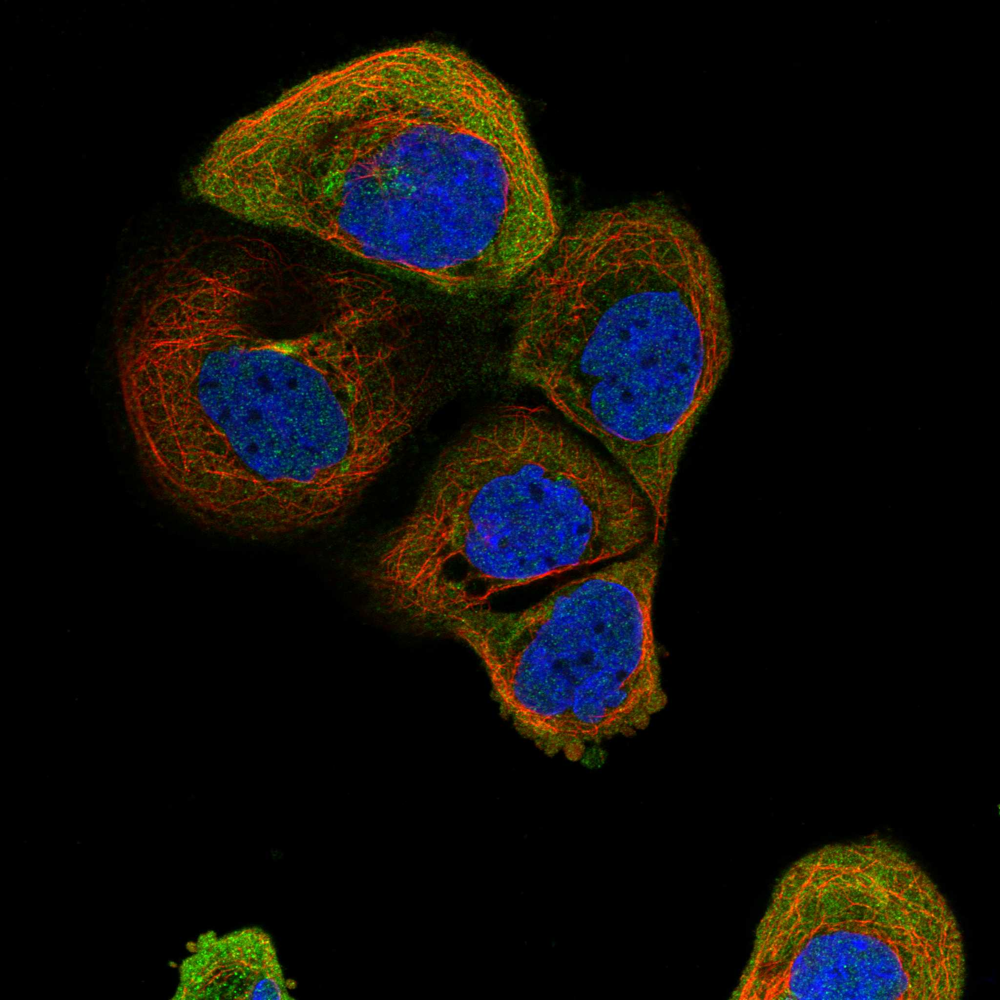
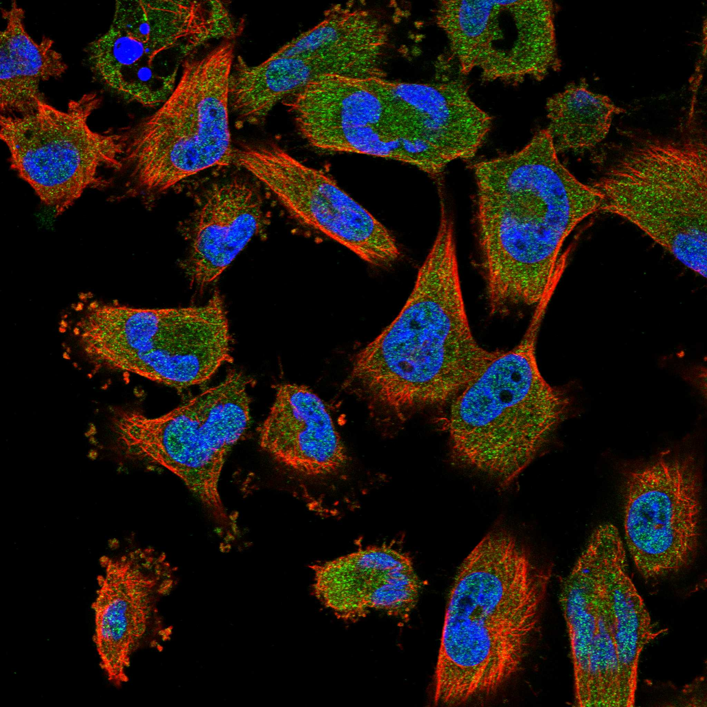
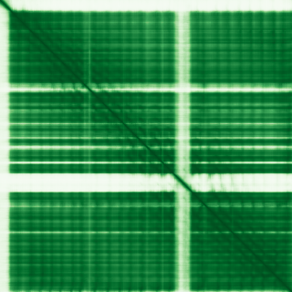

type: protein-evaluation gene: "FBXL18" date: 2026-06-03 tags: [protein-scout, nuclear-protein, evaluation] status: scored ---
FBXL18 核蛋白评估报告 (Full Re-evaluation)
1. 基本信息
| 项目 | 内容 |
|---|---|
| 基因名 / 别名 | FBXL18 / FBL18 |
| 蛋白名称 | F-box/LRR-repeat protein 18 |
| 蛋白大小 | 718 aa / 78.9 kDa |
| UniProt ID | Q96ME1 |
| 评估日期 | 2026-06-03 |
IF 图像:  
2. 评分总览
| 维度 | 得分 | 满分 | 加权后 | 关键证据摘要 |
|---|---|---|---|---|
| 核定位特异性 | 4/10 | ×4 | 16 | HPA: Nucleoplasm; 额外: Cytosol; UniProt: 无注释 |
| 蛋白大小 | 10/10 | ×1 | 10 | 718 aa / 78.9 kDa |
| 研究新颖性 | 8/10 | ×5 | 40 | PubMed strict=21 篇 (≤40→8) |
| 三维结构 | 8/10 | ×3 | 24 | AlphaFold v6 pLDDT=86.9; PDB: 无 |
| 调控结构域 | 8/10 | ×2 | 16 | InterPro: IPR036047, IPR001810, IPR047948, IPR045627, IPR032 |
| PPI 网络 | 3/10 | ×3 | 9 | STRING 15 partners; IntAct 15 interactions |
| 互证加分 | — | max +3 | 1.5 | PDB+AF+STRING+IntAct cross-validation |
| 原始总分 | 116.5/180 | |||
| 归一化总分 | 64.7/100 |
3. 详细分析
3.1 核定位证据
| 来源 | 定位 | 可信度 |
|---|---|---|
| Protein Atlas (IF) | Nucleoplasm; 额外: Cytosol | Approved |
| UniProt | 无注释 | Swiss-Prot/TrEMBL |
IF 图像获取: IF图像已下载并嵌入 (2张)
GO Cellular Component:
- cytosol (GO:0005829)
结论: 核定位信号较弱，多个数据源显示混合定位或非核偏好。
3.2 蛋白大小评估
评价: 大小适中（200-800 aa），适合常规生化实验和结构解析。
3.3 研究现状
| 指标 | 数值 |
|---|---|
| PubMed strict count | 21 |
| PubMed broad count | 24 |
| 别名(未计入scoring) | Aliases observed but not used for scoring: FBL18 |
关键文献: 1. F-box protein Fbxl18 mediates polyubiquitylation and proteasomal degradation of the pro-apoptotic SCF subunit Fbxl7.. *Cell death & disease*. PMID: 25654763 2. Elevated FBXL18 promotes RPS15A ubiquitination and SMAD3 activation to drive HCC.. *Hepatology communications*. PMID: 37378633 3. FBXL18 promotes endometrial carcinoma progression via destabilizing DUSP16 and thus activating JNK signaling pathway.. *Cancer cell international*. PMID: 40382593 4. FBXL18 is required for ovarian cancer cell proliferation and migration through activating AKT signaling.. *American journal of translational research*. PMID: 38883375 5. Fbxl18 targets LRRK2 for proteasomal degradation and attenuates cell toxicity.. *Neurobiology of disease*. PMID: 27890708
评价: 非常新颖，仅有少数基础研究。
3.4 三维结构分析
| 指标 | 数值 |
|---|---|
| AlphaFold 版本 | v6 |
| AlphaFold 平均 pLDDT | 86.9 |
| 高置信度残基 (pLDDT>90) 占比 | 70.3% |
| 置信残基 (pLDDT 70-90) 占比 | 18.1% |
| 中等置信 (pLDDT 50-70) 占比 | 2.8% |
| 低置信 (pLDDT<50) 占比 | 8.8% |
| 有序区域 (pLDDT>70) 占比 | 88.4% |
| 可用 PDB 条目 | 无 |
PAE (Predicted Aligned Error): 
评价: AlphaFold 极高置信度预测（pLDDT=86.9，有序区 88.4%），结构可靠。
3.5 结构域分析
| 来源 | 结构域 |
|---|---|
| InterPro/Pfam | InterPro: IPR036047, IPR001810, IPR047948, IPR045627, IPR032675; Pfam: PF12937, PF19729 |
染色质调控潜力分析: 多个已知结构域注释，AlphaFold预测质量高，结构域折叠可信。
3.6 PPI 网络
STRING 预测互作 (combined score >0.4):
| Partner | Combined Score | Experimental | 功能类别 |
|---|---|---|---|
| CUL1 | 0.983 | 0.715 | — |
| SKP1 | 0.974 | 0.276 | — |
| RBX1 | 0.956 | 0.471 | — |
| FBXL7 | 0.772 | 0.309 | — |
| CAND1 | 0.634 | 0.068 | — |
| NEDD8 | 0.619 | 0.098 | — |
| FBXL16 | 0.571 | 0.472 | — |
| RPS27A | 0.538 | 0.098 | — |
| UBB | 0.535 | 0.098 | — |
| UBC | 0.535 | 0.098 | — |
实验验证互作 (IntAct):
| Partner | 方法 | PMID | ||
|---|---|---|---|---|
| CALCOCO2 | psi-mi:"MI:0398"(two hybrid pooling approach) | pubmed:16189514 | imex:IM-16520 | |
| PLSCR1 | psi-mi:"MI:0398"(two hybrid pooling approach) | pubmed:16189514 | imex:IM-16520 | |
| KRTAP4-12 | psi-mi:"MI:0398"(two hybrid pooling approach) | pubmed:16189514 | imex:IM-16520 | |
| MDFI | psi-mi:"MI:0397"(two hybrid array) | pubmed:19060904 | imex:IM-20259 | |
| CUL1 | psi-mi:"MI:0676"(tandem affinity purification) | pubmed:21145461 | imex:IM-18651 | |
| COPS6 | psi-mi:"MI:0676"(tandem affinity purification) | pubmed:21145461 | imex:IM-18651 | |
| COPS5 | psi-mi:"MI:0676"(tandem affinity purification) | pubmed:21145461 | imex:IM-18651 | |
| HSP90AB1 | psi-mi:"MI:0729"(luminescence based mammalian inte | imex:IM-17906 | pubmed:22939624 | |
| DHRS2 | psi-mi:"MI:0030"(cross-linking study) | pubmed:30021884 | imex:IM-26653 | |
| WWP2 | psi-mi:"MI:0397"(two hybrid array) | pubmed:29892012 | doi:10.1038/s4 |
PPI 互证分析:
- STRING + IntAct 均有数据
- STRING partners: 15，IntAct interactions: 15
- 调控相关比例: 0 / 15 = 0%
评价: STRING 15 个预测互作，IntAct 15 个实验互作。调控相关配体占比 0%。
3.7 多库互证
| 维度 | 来源 | 结果 | 是否一致 |
|---|---|---|---|
| 三维结构 | AlphaFold pLDDT=86.9 + PDB: 无 | pLDDT=86.9, v6 | 仅预测 |
| 定位 | UniProt + HPA | 无注释 / Nucleoplasm; 额外: Cytosol | 一致 |
| PPI | STRING + IntAct | 15 + 15 interactions | 数据充分 |
互证加分明细:
- PDB + AlphaFold 双源验证: +0
- 多库定位一致 (2源): +0.5
- STRING + IntAct 双源验证: +0.5
- 结构域 + AlphaFold 质量: +0.5
- PDB 多条目覆盖: +0
总分: +1.5 / max +3
4. 总体评价
推荐等级: ⭐⭐⭐
核心优势: 1. FBXL18 — F-box/LRR-repeat protein 18，非常新颖，仅有少数基础研究。 2. 蛋白大小718 aa，大小适中（200-800 aa），适合常规生化实验和结构解析。
风险/不确定性: 1. PubMed 21 篇，已有一定研究基础 2. 结构数据质量可接受
下一步建议:
- [ ] 查阅最新关键文献补充研究背景
- [ ] 获取 Protein Atlas IF 图像确认亚细胞定位
- [ ] 设计体外实验验证核定位及潜在调控功能
5. 数据来源
- UniProt: https://www.uniprot.org/uniprotkb/Q96ME1
- Protein Atlas: https://www.proteinatlas.org/ENSG00000155034-FBXL18/subcellular
- PubMed: https://pubmed.ncbi.nlm.nih.gov/?term=FBXL18
- AlphaFold: https://alphafold.ebi.ac.uk/entry/Q96ME1
- STRING: https://string-db.org/network/9606.ENSP00000
- Data fetched live: 2026-06-03
<!-- DOMAIN_HUMANPPI_REPAIR_START -->
Domain/SMART 与 humanPPI 补充（2026-06-07）
SMART / UniProt domain
| Source | Data | |
|---|---|---|
| UniProt | Q96ME1 | |
| SMART | 未在 UniProt xref 中检出 SMART 条目 | |
| UniProt Domain [FT] | DOMAIN 25..72; /note="F-box"; /evidence="ECO:0000255\ | PROSITE-ProRule:PRU00080" |
| InterPro | IPR036047;IPR001810;IPR047948;IPR045627;IPR032675; | |
| Pfam | PF12937;PF19729; |
humanPPI / HPA Interaction
Source: https://www.proteinatlas.org/ENSG00000155034-FBXL18/interaction
| Partner | Datasets | AF3/HPA structure |
|---|---|---|
| WWP2 | Intact, Biogrid | true |
| CALCOCO2 | Biogrid | false |
| CUL1 | Biogrid | false |
| FBXL7 | Biogrid | false |
| MDFI | Biogrid | false |
| PRKN | Biogrid | false |
| RBX1 | Biogrid | false |
| SKP1 | Biogrid | false |
<!-- DOMAIN_HUMANPPI_REPAIR_END -->